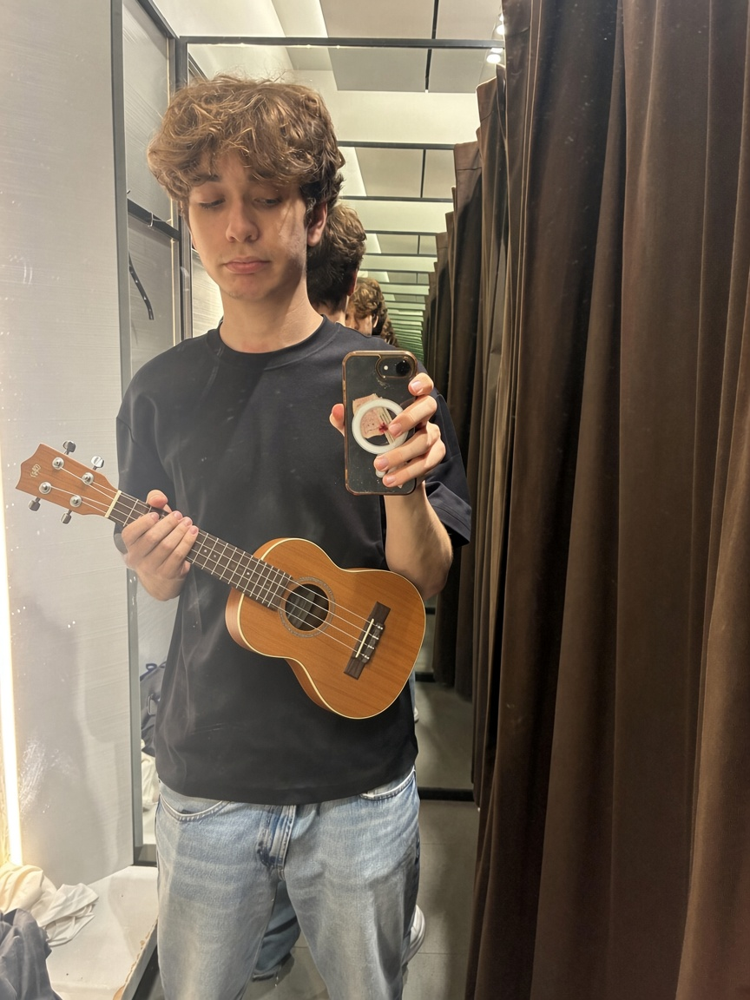

Ukelele
Pequeño, barato y con solo cuatro cuerdas. Es el más fácil para empezar.
Tus primeros pasos
- Conoce las cuerdas. Son cuatro. De arriba abajo suenan G, C, E, A (en inglés se dice "gi, si, i, ei").
- Afínalo. Descarga una app afinadora gratuita y gira las clavijas hasta que marque verde. Hazlo cada vez que lo toques.
- Sujétalo. Apóyalo contra el pecho con el antebrazo y sin apretar el mástil.
- Aprende 3 acordes. C, F y G7 se leen con dibujos de dedos; no hace falta saber leer notas.
- Rasguea. Baja el dedo índice o el pulgar por las cuerdas con ritmo: abajo, abajo-arriba, arriba-abajo-arriba.
10 tutoriales para aprender
Piano
Cada tecla es una nota y están todas a la vista. Perfecto para entender la música visualmente.
Tus primeros pasos
- Mira el teclado. Las teclas negras van en grupos de dos y de tres. Esa pauta te sirve para orientarte.
- Encuentra el Do. Es la tecla blanca justo a la izquierda de cada grupo de dos negras.
- Numera tus dedos. Pulgar = 1, índice = 2, medio = 3, anular = 4, meñique = 5.
- Toca cinco teclas. Pon el pulgar en el Do y toca una tecla por dedo, subiendo y bajando.
- Primera melodía. Practica con la mano derecha una canción sencilla, como "Oda a la alegría".
10 tutoriales para aprender
Flauta
Empezamos con la flauta dulce, la que se usa en el colegio: barata, fácil de tocar y suena bien pronto.
Tus primeros pasos
- Sostén la flauta. La mano izquierda va arriba y la derecha abajo. El pulgar izquierdo tapa el agujero de atrás.
- Sopla suave. Di "tu" en voz baja mientras soplas. Si chilla, estás soplando demasiado fuerte.
- Tapa bien los agujeros. Usa la yema del dedo, no la punta, para que no se escape aire.
- Aprende tres notas. Si, La y Sol usan pocos dedos y ya permiten tocar canciones.
- Limpia la flauta. Después de tocar, sécala con un trapo para que dure más.
10 tutoriales para aprender

Aquí va tu foto: guarda la imagen como tu-foto.jpg junto a este archivo
Quién ha hecho esta web
¡Aquí estoy practicando! Prometo que el primer acorde es el más difícil.